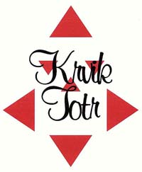

|
a� si to doètete, raète se vrátit |
|
Rozhovor s Krvik Totr
Petr Novotnı a Tomáš Kout sedí v kavárnì Slávie a jsou rozhodnuti provést se mnou rozhovor. Poté si ale berou mé pøipravené otázky a odcházejí neznámo kam. Po nìkolika mìsících mi rozhovor pøichází sám od sebe mailem... |
 |
1. Proè vlastnì
dìláte všechno to, co dìláte (píšete, hrajete, zpíváte, skládáte...)?
PN:
Prostì proto!
TK: Proto�e musíme.
PN:
Co bychom dìlali jinıho, �e jo.
TK: No jasnì, proto�e musíme. Jako z vnitøního musu, ne �e by nám to òákej imperativ kázal... Vlastnì jo, imperativ vnitøní nám to ká�e.
PN (smích): Tak na tohle nemám slov. Co k tomu mám jako dodat? Já
u� bych k tomu snad jen - já nevim, co bych ještì... -
TK:
Jako z toho pøetlaku, jak se to v�dycky øíká... Proto�e nám to nedá. Nedá
nám to nedat se do toho. Ale baví nás to. Je to záliba - koníèek pøerostlej
do... do... Co vono to vlastnì je?
Koníèek pøerostlej v soustavnou amatérskou èinnost na poli literárnì divadelním, které�to pole zovu autorskım divadlem.
PN (nádech na vá�nı monolog): Je to hroznì divnı se nad tím
zamyslet. My to vlastnì nedìláme nìjak vìdomì nutnostnì - je to za�itı
zvyk se spolu vídat a nìco podnikat. Poznali jsme se na základce, známe se u�
skoro tøicet let (pøesnìji to je nìco kolem 16 let spoleènì strávenıch),
a tehdy jsme se v socialistické nudì zabavovali podnikáním rùznıch
klukovskıch spolkù s jedinım programem: organizovanou ilegální èinností,
to nás dìsnì bavilo. Lezli jsme po skalách a hráli si na partyzáni - po pøevratu
jsme hráli úplnì tu samou hru, ale partyzány nahradili komunisti. To jsme
pak rozvinuli zalo�ením ilegálního státu Svrchované Vokovice (v které�to
nejvıznamnìjší pra�ské ètvrti já �iju), samozøejmì mìl komunistickou
strukturu, vlastní ústavu, ve které šlo pouze o to, jak namastit kapsu hlavním
pøedstavitelùm (budoucím Krvik Totr) "Vokovickımi Penìzi" a jak
nepøijít o koryto. Vokovice mìly i propracovanou strukturu MHD - nic
nejezdilo, s vıjimkou vládních rikšù... No a kdy� jsme zaèali na poèest
naší nové vlasti zpívat socialistické písnì vytáhnuté ze slavného Hercíkova
zpìvníku z 50. let a potom je i nahrávat, Krvik Totr v nejpùvodnìjší
podobì byli na svìtì. Potom jsme dál a dál blbli, v pøehršli soukromıch
rádií poèátku 90. let jsme vymysleli vlastní, Naše Rádio, kde jsme to všechno
parodovali, poøád jako kluci, ale pak se to zaèalo samo od sebe mìnit k nìèemu
vìtšímu, tím, jak pøibıvaly vlastní scénky a skeèe - a najednou tu jsme
v plné krvikototrské kráse, ty srandy zcela vá�nì píšeme, hrajeme,
zpíváme skládáme, a ty se nás ptáš, proè... No prostì proto.
2. Máte ve skupinì
nìjak rozdìlené role? Kdo z vás je Laurel a kdo je Hardy? Kdo je
Voskovec a kdo Werich? Kdo je ta�ka a kdo mamka?
PN: No tak na to je jednoduchá odpovìï - ten chytøejší z tìch dvojic jsem v�dycky já...
TK:
Ano, já jsem Kout a von je Novotnı. Von je rej�a a dìlá všechno, já jsem
Kout a dìlám prùsery. Ale jináè, já jsem mamka a Petr je ta�ka. Von je
hubenej a taky tvrdej.
PN:
Zvláštì, kdy� do mì nìkdo kousne nebo praští, tak jsem takovej kostnatej.
Jen�e já si nemyslím, �e by mamka byl Tomáš a ta�ka já.
TK:
Na jevišti jo! Ale v pozadí jsem mamka já, proto�e já vyšívám hedvábné
kapesníèky.
PN: Kde�to já chodim do hospody na pivo.
TK:
Ty vydìláváš, dìláš všechnu tu døinu - a já doma tak jako...
PN: Prudíš.
TK: Tak to je v zákulisí, ale na jevišti je to naopak.
PN:
Ne� zaèal Tomáš mutovat, hrál mamku a všechny �enskı role on, teï je
tomu naopak - zhrubl a mì nechal ve vıškách, ve kterıch mi nezbıvá nic
jiného ne� bıt "ta�kovi Tomášovi" oporou a lepší polovièkou...
Ale právì proto, �e jsou všechny dvojice takhle jednoduše a navìky rozdìlovány
na mamku-ta�ku, sna�íme se to pravidelnì otáèet - a kupodivu s pochopením
publika.
Ale jinak - tìlesnì se moc nelišíme, a� na to, �e mnì pøíroda zapomnìla pøiplácnout k tìlu nìjakı to maso, tak�e úplnì normální Tomáš vypadá vedle mì absurdnì otyle, to ale neznamená, �e jsme Laurel & Hardy. Naše cvokárny navíc nejsou tak otevøenì pochopitelné, by� ta sebeblbost L+H se v nich v�dycky objeví, ovšem ne v prvním plánu. Voskovec-Werich, no, to bych øekl, �e obojí je Tomáš, proto�e je dìsnì �ere, se zápalem a� skoro �ivotopiseckım.
3. Pova�ujete nìkoho za vlastní pøedchùdce? Cítíte se bıt následovníky
nìjakého umìleckého smìru? Kdybyste se mìli pojmenovat jako nìjakı (tøeba
vlastní) -ismus, jakı by to byl?
PN:
Pøedchùdci, které následujeme? (Odkašle
si) Tøi ètyøi -
OBA (unisono): Voskovec/Werich, Suchı/Šlitr, Šimek/Grossmann, Lasica/Satinskı, Smoljak/Svìrák, a ze všeho nejvíc Kaiser/Lábus...
PN:
Kaiser/Lábus jsou ty jedinı opravdoví pøedchùdci, proto�e jsou taky tìsnì
pøed námi.
TK:
To je pravda. K tìm ostatním jsme pøišli mnohem pozdìji. No a ty ismy...
(Odkašle si) Tøi ètyøi -
Oba (unisono): Voskovec-Werichismus, Šimek-Grossmannismus, Svìrák-Smoljakismus,
Kaiser-Lábusismus...
PN: No a ještì nìco jako... socialismus! Ten nás taky hodnì ovlivnil.
TK: Ten nás odkojil.
PN: To byla naše matka - naše vlast.
TK: No a pak veškerı ty musy, co musíme!
PN:
A ještì kubismus! Proto�e všechno, co píšeme, je pak v�dycky rozházenı
stejnì jako v kubismu. Tak�e v podstatì jsme kubisti.
TK: No ale pozor, komunismus nás taky ovlivnil, projevy a tydlecty šílenosti.
PN:
A husiti! ještì husiti nás hodnì ovlivnili.
TK: Husismus.
PN:
Husiti, všechno na stùl - demokracie ve skupinì.
TK:
To je vlastnì kolektivismus.
PN:
Kolektivismus - já všechno udìlám a vy -
TK:
A my to kolektivnì shrábnem.
PN: Tak ale teï to zkusíme vá�nì. Z ismù to bude nejvíc surrealismus.
TK: Kdysi zaznìlo novotnismus-koutismus, kterım jsme pøekonali marxismus-leninismus, a i kdy� se to tıkalo jiné oblasti našeho konání, patrnì je to i ten náš -ismus. Ale jinak u� mì napadá jen antimarasmus. Ale to není ismus, �e?
PN:
No tak je to náš -asmus. A ještì máme -ama a -ada, jako absurdní drama a
hlavnì dada, proto�e my v�dycky v našich textech rozlo�íme realitu na
prvoèísla a pak je picassovsky poskládáme úplnì jinak. Kulatı ètverec.
4. Hádáte se?
Jak øešíte umìlecké a jak osobní spory?
TK: Hádáme se.
PN:
Ne, poèkej, já myslím, �e se nehádáme.
TK: Já myslím, �e se hádáme.
PN: Já myslím, �e se nehádáme.
TK:
Neser mì!
TK:
No, asi takhle se hádáme poøád.
PN:
To byl ukázkovı pøíklad toho, jak se nehádáme.
TK: To byla ukázka toho, jak se hádáme.
PN: A nejhorší je, kdy� musí jeden ustoupit!
TK: To je nejhorší, no.
PN:
A vìtšinou to je Tomáš.
TK:
No, právì.
PN:
Ale pak jsem to taky nìkdy já. A to je mnohem horší...
TK: Proto�e se u� uèím, jak on to dìlá. Za tìch 16 let jsem ho u� trochu prokoukl...
PN:
To je fakt, kdy� je nejhùø, Tomáš mi šlápne na brejle...
TK: Prostì se nehádáme vùbec, ale zato poøád. Osobní spory øešíme osobnì, umìlecké neosobnì, ovšem o to vášnivìji. Kdesi Lasica hovoril o tom, �e takáto dvojica je cosi ako man�elstvo. A zdravı partnerskı vztah bez hádek není zdravı. Krom toho jsme ka�dı jinı, tak�e se obèas støetáváme o prkotiny, ale nikterak mimo meze. Navíc oproti man�elství máme tu vıhodu, �e kdy� prásknou dveøe a jeden se jde o�rat, ten druhej jde s ním, a hádáme se dál, ovšem o to, co budeme pít.
PN:
Kdy� pøijde okam�ik, ve kterém se v našem spoleèném psaní naprosto
rozejdeme v øešení, hádáme se do krve. Ty hádky jsou nejen o vìty,
ale i o slovíèka. A osobní spory - no, fakt je, �e my vlastnì �ádnı nemáme:
to u� je horší ne� to Lasicovo man�elstvo, my jsme prostì tak nìjak
srostlí, èím� trpí celé naše okolí, zvláštì ty drahé polovièky,
kterım neustále mizíme (a které trpí o to víc, �e vìdí, KAM mizíme...),
tak�e hádky jsou u nás spíše otevøenımi diskusemi, ze kterıch vyjde urèitı
vyprecizovanı názor - a pokud jde o nìco jako ponorka, tu za�íváme vıhradnì
krz dlouhou práci. Jen�e bezprostøednì po dokonèení díla ji totálnì
prolijeme mnohaprocentními potoky patokù...
5. Chcete bıt
slavní? Šli byste do televize Nova?
PN: Nìkdo je skromnej, nìkdo ne, ale ze všech nakonec vyleze, �e slávì se nebránìj - tak proè to skrıvat. My u� jsme si pøiznali dávno (asi tak minulı tıden), �e chceme bıt šílenì slavnı. Ale ta naše sláva se nám jeví jaksi lokálnì. Bejt NÌKDO ve skupinì umìlcù a divákù urèitıho víceménì soukromıho, proto�e právì úplnì netelevizního stylu umìní èi humoru. Tak�e s tímhle bychom do Novy nešli, proto�e by nám to ani nenabídli.
TK: Nejsme na to dostateènì masoví, viï hubeòoure?
PN:
Nicménì mám takovı osobní sen – (zjihne)
já bych hroznì rád šel do Novy tleskat na Milionáøe...
(smích) To je toti� strašnı - ty lidi tam jsou buï š�astnı, �e se
ztrapnili pøed celou republikou a kusem Slovenska, proto�e nevìdí, co to je
há-dvì-ó, no a tìm ovcím za nima staèí dokonce u� jen to tleskání a
pak doma - "Hele Máòo, teï jsem tam milisetinu byl, dvacátej šestej
zleva". Nevím, jestli si to pak napíšou na hrob, ale náš cíl je
znamenat nìco vlastním dílem, nemít vıraz fyzickı, ale vnitønì-umìleckı
- a to u� se nám vlastnì daøí.
6. Pokoušíte se
o nìco i sólovì? Jak se ka�dı z vás na sólové projekty tìch dalších
dívá?
TK: Ale jó, pokouším se. Dokonce ji� vícekrát došlo ke spolupráci Novotného s Koutem mimo Krvik Totr. Ale tak, �e já spolupracoval na Novotného vìci. Já �e bych sám nìco dìlal, na to jsem prostì línej.
PN: No a to strašnì kecáš, proto�e hraješ divadlo, to je tvoje velikı sólo.
TK:
Ale to je jiná zále�itost! To neberu jako sólo. Sólovı projekty autorskı
nemám. K divadlu jsem si sice našel cestu pøes psaní, ale je to opravdu jiné,
podílím se na práci jako ostatní a pøedevším pracujeme na textech druhıch
autorù, a pro mì je zásadní vlastní autorství. Cítím se poøád více
spisovatelem ne� hercem, básnické støevo mám, o tom u� dávno nepochybuju,
ale herecké nadání? To musí posoudit jiní. Baví mì to, ale to není sólová
zále�itost, jako to nebyla chemie v dobì, kdy jsem se jí zabıval (a s upøímnım
zájmem).
PN:
U mnì je tato otázka velmi vtipná, proto�e já v�dycky tak nìco dìlal,
psal si, sobì i druhım - a z tìch mnoha rozliènıch èinností vzešli
i Krvik Totr - no a nìjak mì pøerostli... Proto se sna�ím co nejvíc se od
nich odpoutat, nikoli konkurovat, ale bıt víc svùj, proto�e Krvik Totr jsou
vìcí dvou lidí. Chci psát nìco úplnì jiného, nikoli humor, ale nìco
hluboce vá�ného, vá�nì hlubokého. Ale vùbec to nejde, proto�e jsem
deset let zakoøenìnej v naší srandì. Støetem zájmù pro Krvik Totr mù�e
bıt divadlo, kterımu se formou svıch scének definitivnì pøiblí�ili, a
kterı zároveò já moc tou�ím sólovì psát a Tomáš na divadle zase
"sólovì" hraje. Nicménì øevnivost mezi námi není, mo�ná zdravá
závist nutící toho druhého k vìtší aktivitì. V�dycky se naše
vlastní vìcièky odrazí v ještì lepší spoleèné práci.
TK:
Ba�, ba� v�dycky kdy� poslouchám, co zase napsal, dostávám chutì
zasednout a psát své vìci, dokonce nìkdy dostanu i nápad, jen�e jsem línej...
Tak�e se mi vrší zapsané a nezpracovávané nápady a jen tu a tam nìco
vznikne - vìtšinou bezprostøednì z pocitu, nejèastìji pøi cestování MHD.
7. Milujete slovní høíèky, to je jasné od zaèátku -
co jiného ještì spojuje a dìlá vaši poetiku vaší poetikou, co je pro vás
nejcharakteristiètìjší?
TK: Høíèky u� dávno nejsou to stì�ejní. Døív to byla høíèka a na ní postavenej text. Teï je to postavenej text vomítnutej høíèkama.
PN:
Oproti minulım letùm, kdy byly naše povídky shlukem tìchto srandièek, je
to nyní "o nìèem jiném". Tahle nová jazyková zrùdnost to ostatnì
vystihuje - parodujeme, shazujeme, mìníme za�ité postupy jazykové, spoleèenské,
�ánrové, ale hlavnì LOGICKÉ, a to prostøednictvím scének èi dialogù,
ve kterıch to vše klišovité pøevracíme vzhùru nohama. Tak�e høíèkám
jako základu všeho odzvonilo, by� v�dycky nìjaká zazní. Naše poetika je
tedy "pøevracet vše naruby".
TK:
Poetika, kterou mám u nás rád, le�í pro mì v barvitém nesmyslnu - bezdìky
mì napadá text Takovı odpornı klišé,
kde je plno takovıch míst. Napøíklad (literární) obraz lesa vystupujícího
z moøe. A všelijaké takové fantazie, které jsou mo�né vıhradnì v naší
pøedstavivosti. Jen�e u� i od toho jsme pryè, teï píšeme divadelnì, kde
to stojí na akci, by� nadále akci slovní.
PN: A máme vypìstované vlastní, takzvané "smrtelné klišé", proto�e v našich "umìleckıch vyjádøeních" vìtšinou nìkdo umøe, nejèastìji hlavní postava, podle pravidla, �e to se v seriózních dílech stát nesmí...
8. Jaké bylo vaše
nejhorší a jaké nejlepší vystoupení?
PN:
To jestli se veèer povedl èi ne, nezále�í prakticky vùbec na tom, jestli nás
publikum pøijalo a pochopilo. Jsme tak podivnì jiní, �e jsme se rozhodli
nedepkaøit a bıt nad vìcí, necítit nepøijetí jako svoji chybu. Tak�e
nejhorší vystoupení byla pouze ta, na která jsme se nedostateènì pøipravili
- respektive vyflákli. I naše omezená produkce potøebuje a� nechutnì
profesionální a èetné zkoušky... A kdy� pak takovéhle nadrcené pøedstavení
pøedvedeme a diváci mají dojem spontaneity a improvizace (s èím� za námi
obèas chodí), máme jen a jen radost. Nejlepší vystoupení jsou tedy skoro všechna.
Zajímavostí je, jaké rùzné skupiny nás pøijaly: dìti, puber�áci, støední
vìk, dùchodci, ale také bezdomovci a opilci, tìlesnì posti�ení lidé (ti
dokonce tu naši "jinou realitu" ocenili nejvíce, asi proto�e v ní
sami tráví všechen svùj èas), metaláci a dokonce intelektuálové...! A
nutno øíci, �e vylo�enì negativní zkušeností jsme si ještì neprošli -
a strašnì se toho bojíme.
TK: Úplnì nejlepší je v�dycky naše vystoupení na festivalu v Mnichovicích (právì pro ty posti�ené), tam je nejvdìènìjší publikum. Ti nejspøíznìnìjší jedinci ze všech ostatních vystoupení si tam snad dávaj sraz.
9. Bojíte se mezi
lidi nebo trému zvládáte bez problému?
TK:
Tréma pøed vystoupením je nepøímo úmìrná poètu pøítomnıch známıch
v hledišti - èím víc kamarádù, tím je nám líp. Tréma pøed vystoupením
je ale dvojí - tréma úèinkujícího a tréma
autorská, ta je tam navíc (oproti normálnímu divadìlání). Mám pocit,
�e tu autorskou pro�ívám silnìji, a nejen díky otrkání na herecké škole.
Nejvıraznìjší trému pozoruji v okam�icích (a nemyslím teï pouze sebe),
kdy herec jde na trh se svımi vıplody - a� jsou to mluvní cvièení nebo pøiblblé
referáty anebo veliké drama. Lidi, kteøí jinak na jevišti bez ostychu tanèí
èi zpívají, náhle nevìdí, co s rukama antnp.
PN: Já se poøád uèím se nebát, moc mi to nejde - na pódiu ale to snad znát není, jde jen o ten okam�ik tam pøed ty vyvalenı bulvy vstoupit. Tomáš mi ale moc pomohl myšlenkou, �e se nemám èeho bát, proto�e bát by se mìlo publikum... (Nebo to øekl Einstein?) Nicménì je mezi námi velikı rozdíl: kdy� všechno dopadne dobøe, já mám strašlivou touhu oslavovat, ale nejradìji jen s Tomášem, nebo s tìmi, kdo tam nahoøe byli s námi. Z lidí mám radost na zaèátku, bìhem vystoupení, ale pak se jim strašnì straním, mám takovej divnej pocit, nedoká�u unést to, èemu se øíká úspìch èi popularita. Nejhorší je, kdy� za mnou nìkdo pøijde a plácá mì po zádech, to vá�nì nevím, co mám dìlat - nejradìji bych se zdejchnul anebo propadl. A Tomáš naopak. Vlítne tam jak Kerouac a za chvíli se zná se všema.
10. Jak èasto se
vídáte a kolik práce prùmìrnì Krvik Totr vìnujete?
TK: Tak na èíslíèka je tady rej�a. Vídáme se rádi, a tedy jak jen to jde. Spoleèného èasu vìnujeme na Krvik Totr podle mého soudu tolik jako Petr ještì sám na tuté� èinnost. Ale já jsem línej, tak�e sám nic.
PN:
Dejme tomu, �e prùmìrnì píšeme tak dvacetkrát-tøicetkrát do roka. Na
jedno vystoupení vìnujeme pìt-deset zkoušek. Na nahrání a zmixování
desky padne mìsíc-dva. Pak je tu velice vıznamná polo�ka - chlastání. To
bych radìji nepoèítal... Ovšem Tomáš si po všem tom upláchne za svımi a
mnì zùstane ještì spousta další práce, proto�e jsem opravdu "zapálenı
Krvik". Vìtšinou to vychází tak, �e ka�dı tøetí den dìlám nìco
pro Krvik Totr, a� s Tomášem èi bez nìj.
11. Proè Totr
je docela jasné, ale jak vznikl název Krvik?
PN: Totr je jasné? Co to znamená? Já u� nìjak zapomnìl - ono to nìco znamená? A Krvik... To snad u� vùbec nic neznamená. Nebo snad jo, Tomáši?
TK:
Co�e? Nìkdo nìco øíkal?
PN: No tak dál...
12. Jak snášíte
negativní kritiku?
TK: Jak od koho, jak èeho, jak jakou. Vzhledem k tomu, �e Krvik Totr se vyvinuli ze záliby, bereme kritiku mo�ná osobnìji, ne� by bylo záhodno. Souèasnì vìtšinou pøesnì víme co, proè a jak co dìláme a píšeme, tak�e kritika pro nás èasto neznamená víc ne� nepochopení. Nakonec se v�dy uklidníme návratem ke koøenùm - dìláme to pro sebe, pro svou zábavu... Ale u� to pøestává platit, co rej�o?
PN: Tøeba kritika �ivıch vystoupení je velmi podnìtná - tam jde o konkrétní povídky èi scénky a my víme, co jsme pøepískli a co napøíštì upravíme, vylepšíme, nebo celı vyhodíme. �iváky jsou nejnádhernìjší tou kù�í, kterou si tam pøinášíme a o kterı nevíme, v jakém stavu ji poneseme domù. Ale jinak snášíme kritiku strašnì, jako ka�dej. Ovšem pokud nám nìkdo zdrbne desku, kvùli kterı tøeba strávíme nejkrásnìjší chvíle prázdnin èi nìjakıch svátkù zalezlı v pokoji, kde je zima a tma celej rok úplnì stejnì hnusná, kritiku snad ani nebereme. Je to naše dítì, s chybami nebo bez.
13. Vznikají vaše
vìci z konverzace nebo je nejdøív píšete? Zapisujete si spontánní nápady?
Pou�íváte všechno, co vás napadne, nebo doká�ete škrtat?
PN:
Škrtání se teprve uèíme - ale fakt je, �e ho podle nás není moc tøeba.
Všechno naše toti� vzniká ze "studiové improvizace", dáme si téma
(mù�e to bıt celı zkonstruovanı námìt, vtip, nebo jenom myšlenka, slovo,
pøedmìt, zachycenı citát, pocit) a na tom zaèneme improvizovat, a� se
chytneme a rozjedeme to na plné pecky. V tìch nejkrásnìjších chvílích
to z nás lítá šílenou rychlostí, �e ani nestaèíme zapisovat. Tak
èi onak - ji� bylo øeèeno, �e se hádáme o slovíèka, tak�e škrtání
moc tøeba není.
TK:
Jinak pøi psaní píšeme ka�dı do svého - vznikají dva rukopisy. Tak psali
Š+G. Na ka�dém slovì se pøedem dohodneme, píšeme a� po shodì. Nìkdy tøeba
i po øadì neshod, ale teprve shoda dovoluje zapisovat. Èili ony dva rukopisy
jsou toto�né.
PN:
Ještì k tomu škrtání - k našemu tradiènímu rituálu patøí
to, �e oba píšeme plnicími pery. Ta pak v kritickıch okam�icích
zaschnou, dojde jim inkoust èi se ohnou, tak�e je to vìènı proces rozèilování
- no a to pak èlovìk píše vá�nì u� jen to nejlepší a nejnutnìjší...
14. Kdyby ka�dı
z vás mìl popsat toho druhého v jednom odstavci, jak by ten
odstavec znìl?
TK: Tak to u� tu bylo. Popis mého nejlepšího pøítele - 7. tøída, školní rok 1991/1992. Bylo to veselé. A dnes? Novotnı je u�ší ne� širší a taky vyšší ne� ni�ší. Plešatící mánièka s lennonkami na nose. Odkládá je jen ve chvílích pohnutí a na noc. Teda pokud spí sám. Pøi jídle se v jídle nimrá a mì to toèí. Já toti� zase hltám, co� toèí jeho. Ale teï se to otáèí, jak se tak ovliòujeme. Je extrémista. Kdysi to kdosi pøepøesnì vyjádøil vìtou: "Petr dovede buï milovat, nebo nenávidìt." A tak je to se vším. Vypadá køehce, ale je opravdu neúprosnì tvrdej, nejvíc k sobì a pak ke mì. Vùdèí typ, umí mì vykopat z postele, co� èasto potøebuju. Myslím, �e zásadní pro náš vztah a pota�mo i pro Krvik Totr je skuteènost, �e se doplòujeme, øekl bych, �e a� vıjimeènì. Já jsem snílek, Petr je nesmírnì hlubokı. Má pøesnì ohranièenı okruh zájmu, pøesnì vymezená témata, ve kterıch je nejznalejší mezi odborníky a souèasnì dovede bıt nejvdìènìjším �ákem. Ale mimo tyto oblasti netuší. Ale ani a rozhodnì nechce. Já pošuk zase hltám vše, èasto i na škodu. Nicménì bylo by mylné myslet si, �e Petr nezná naslouchat. V tom nemám druhého takého.
PN: Tomáš je èlovìk, kterej má hlavu v oblacích a nohama klopıtá o realitu, pøitom si myslí, �e má vše pod kontrolou. Je to romantik, kterı si není jist sám sebou, moc sobì nerozumí a èasto mu musí okolí pomoct pøekonat nìjakı vnitøní problém. Jen�e tenhle chybìjící egoismus nahrazuje šílená potøeba obsáhnout dav a ka�dého v nìm zvláš�, tam má pochopení ohromné, pro ka�dého. Obrovsky se vydává z energie pro druhé, a to má pak za následek období pøíšerného vyèerpání v podobì osamocené, trpitelské skepse.
15. Co si myslíte
o souèasné literatuøe, pøípadnì o politice, ekonomice, fotbale?
PN:
Já osobnì jsem si uvìdomil, jak moc má na èlovìka dopad to, kdy� se plnì
vìnuje nìèemu svému (a je úplnì jedno, jestli to je psaní nebo botanika
nebo promazávání motorù). Ve srovnání se svım okolím jsem vlastnì
buran, proto�e jsem skoro nic nepøeèetl a nic nevidìl - ale právì proto,
�e na to nemám èas. Souèasná literatura mì pøitahuje jen nìkolika nejdùvìrnìjšími
jmény, ale stejné to mám v literatuøe všech dob. Mımi a� biblickımi
dùvìrníky, kteøí nemají pranic spoleèného s poetikou Krvik Totr,
jsou Hermann Hesse, Michail Bulgakov (tam je podobnı hoøce satirickı pohled
na svìt), Ian McEwan. Z tuzemska mám rád underground, poezii spojenou s hudbou
a všelijaké psychotické osobno. Básnické pøedlohy Plastic People a Jáchym
Topol (ze všech knih, co jsem kdy pøeèetl, mì skoro nejvíc zasáhla Noèní
práce). A moøe divadla.
TK: Literatuøe rozumí spíš tady Petr, já moc neètu - jsem línej. Obelhávám to tím, �e chci knihy psát, ne èíst. Krom toho je pravda, �e jsem nadmìrnì èetl v dìtství (nemaje kamarády) - mám "naèteno". A to, co ètu, není souèasnı. Prostì nevim - Vıchova Vieweghù v Cáchách? Rád se bavím, smìju. A je mi jedno jestli u knihy, filmu nebo pøedstavení. Èasto se mi stává, �e jsem jedinı, kdo se smìje, o to se však smìju hlasitìji - všem spoludivákùm minulım i budoucím se tímto omlouvám, ale jinak to neumím.
PN:
O politice si myslíme s Tomem toté� - rozhodnì ne!
TK:
Rozhodnì ne!!! To je naše souèasné heslo.
PN: V tomto smìru jsme šílenımi "antisty", pod levicovım vzorem Johna Lennona (tedy ne rudì sibiøskım, ale beatnicky americkım). Jsme naštvaní úplnì na všechny, na celı systém, o to víc, �e se v tom shodujeme - a nemluvíme o tom, proto�e podobnı antinázor má málokdo. Jen�e my nikam nehá�eme dla�ební kostky - znechucení tímto svìtem se projevuje v našich vá�nìjších poèinech. –
Co to chceš dál vìdìt – ekonomika? To jako, kolik stojí litr rumu? Nad osmdesát nejdeme! Leda v nouzi...
TK: Ekonomika? Pøijde prùser, tak�e si u�ívejme - nebudou...!
PN: Fotbal? Jé, já kdysi byl na fotbale ka�dej tejden, ale nejvíc si z toho pamatuju ty brambùrky. Od tı doby, co jsem vyspìl (v sedmi letech...), jsem sport úplnì vypustil. Lusk! Nic nevím.
TK:
Fotbal mì nebaví, já radši hokej a ten je príma, né? U� se tìším na
mistrovství.
PN: Èili abych to shrnul: "Párky mi nechutnají, zmrzlinu nesmím, limonádu nepiju!"
TK: "Mám chleba od maminky!"
16. Máte
konkurenci? Víte o nìkom, kdo dìlá nìco podobného, co vy?
PN: Já osobnì musím øíct, �e v naší generaci nevím o nikom. A to je hroznì dobøe. Jen�e my taky nejsme �ádnı cpavci, �ádnı soutì�e nebo festivaly, pìknì hezky soukromì si vystupujeme a pøípadnou konkurenci necháváme v klidu spát.
TK:
Konkrétnì nikoho neznám, ostatnì myslím, �e jsme ojedinìlım úkazem, co�
nemyslím samo�ersky, ale o dvou jinıch kamarádech, kteøí by krom popíjení,
hovorù o dívkách, politice, o tom co je baví a co sere, koneènì i o tom
hokeji spolu pak zasedli a psali, jsem zatím neslyšel. Jedinì èetl. O
Voskovcovi s Werichem. Co� je srovnání, které øíkám beze studu. Podstatou
naší dvojice jsme toti� srovnatelní. Jinak tì�ko. Zatím.
17. Píšete i na
místì, kde psali Šimek s Grossmannem, u speciálního stolku ve Slavii.
Proè je to pro vás dùle�ité?
PN: Mysli si, co chceš, ale Slávie má ohromnì impulzivní genius loci. Sem vejdeš, a pokud vá�nì nemáš v úmyslu jen to pøiblbı kafe, šílenì tì to nakopne. Kolem tebe poøád proudìj lidi, kterı odnìkud znáš - z divadel, z televize, klidnì z politiky - no a nejvíc lidi, kterı potkáváš v úloze divákù na akcích, na kterıch jsme sami byli, lidi s obrovsky nápadnou aurou �ivota - taky sem lezou, pøitahuje je to. Není to snobárna, je to opravdu magneticky pøita�livé pole. Dlouho jsme sem jít chtìli a poøád nešli, ale jak jsme sem vešli, nemù�eme pøestat. A jako poctu svım velkım vzorùm vyhledáváme stále ten jejich Zapovìzenı stolek u záchodù, kterı jsme pøekøtili na Pøedpovìzenı.
TK: My si na takovı symboly a propojení èasovì-místní potrpíme i v �ivotì, tak�e v tvorbì je to jen logické. Kdybychom vìdìli, kde psali V+W èi jiní, tak ta místa støídáme. Mnì pøijde magické chodit po místech, kudy zaruèenì prošla ONA (ta, která mì teï bere), a stejnì tak po místech, kde zaruèenì chodili oni - naši obdivovanci.
PN:
No a navíc, ten Pøedpovìzenej stùl
ve Slávii je hned u hajzlíku, tam se èlovìk necítí moc
hoch, kdy� kolem nìj poøád chodìj lidi s jedinou, nechutnì
realisticky fyzickou potøebou, tam je to opravdu jadrnì pøízemní a obyèejné.
TK:
A má to i tu praktickou vıhodu, �e èíšnictvo si nás tam moc nevšímá. A
to se to pak píše...
|
a� si to doètete, raète se vrátit |
© 2005 Krvik Totr Limity